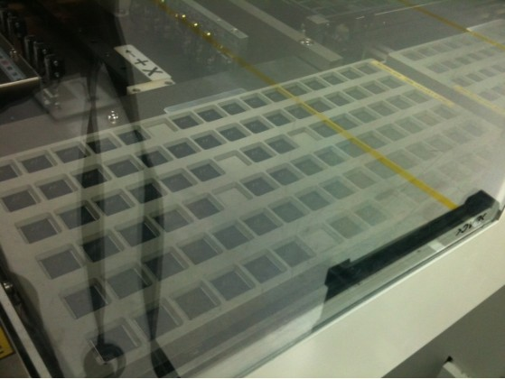
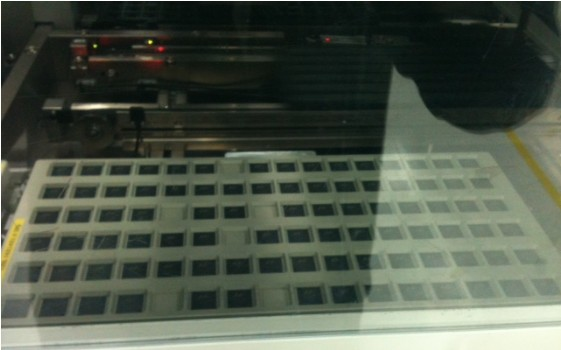

Service History
Subject: ASE NS7080 on octal site (2x4) changekit, handler skips to fill up certain pockets in hotplate 1 and 2
Handler Model: NS-7080 (H08-NS78)
Controller: RC520
Date: 25 May 2011
Symptom
ASE NS-7080 on octal site (2x4) changekit issue:
- Handler skips to fill up certain pockets in hotplate 1 and 2. see attached photo.
Observation:
1. At initial start, the handler would pick units on the tray loader and place on hotplate 1 & 2.
2. The input arm will not place units at 6 pockets in hotplate 1 and hotplate 2.
3. When the input arm goes below the hotplate where there is an empty pocket to load units to the input shuttle, the input arm would only load 2 units on the shuttle.
The 6 empty pockets on the shuttle corresponds to the 6 empty pockets on the hotplate.
Using 6x11 hotplate the results are also the same (6 hotplate pockets empty).

Action
Cause